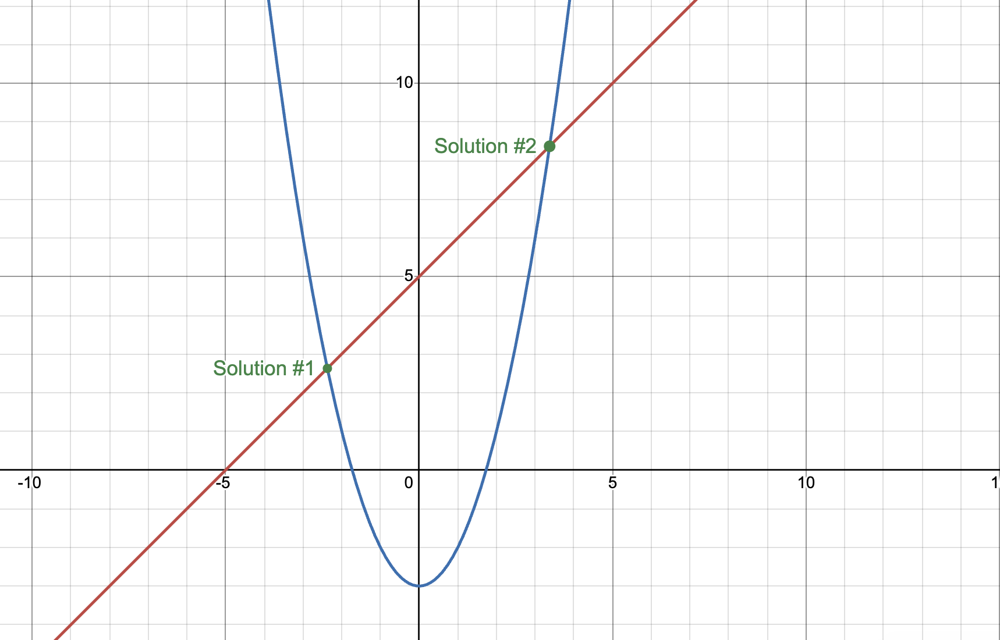
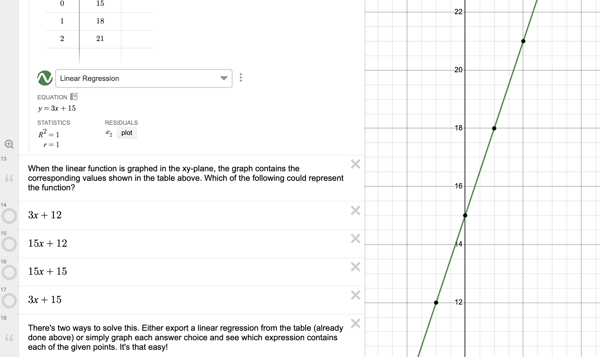
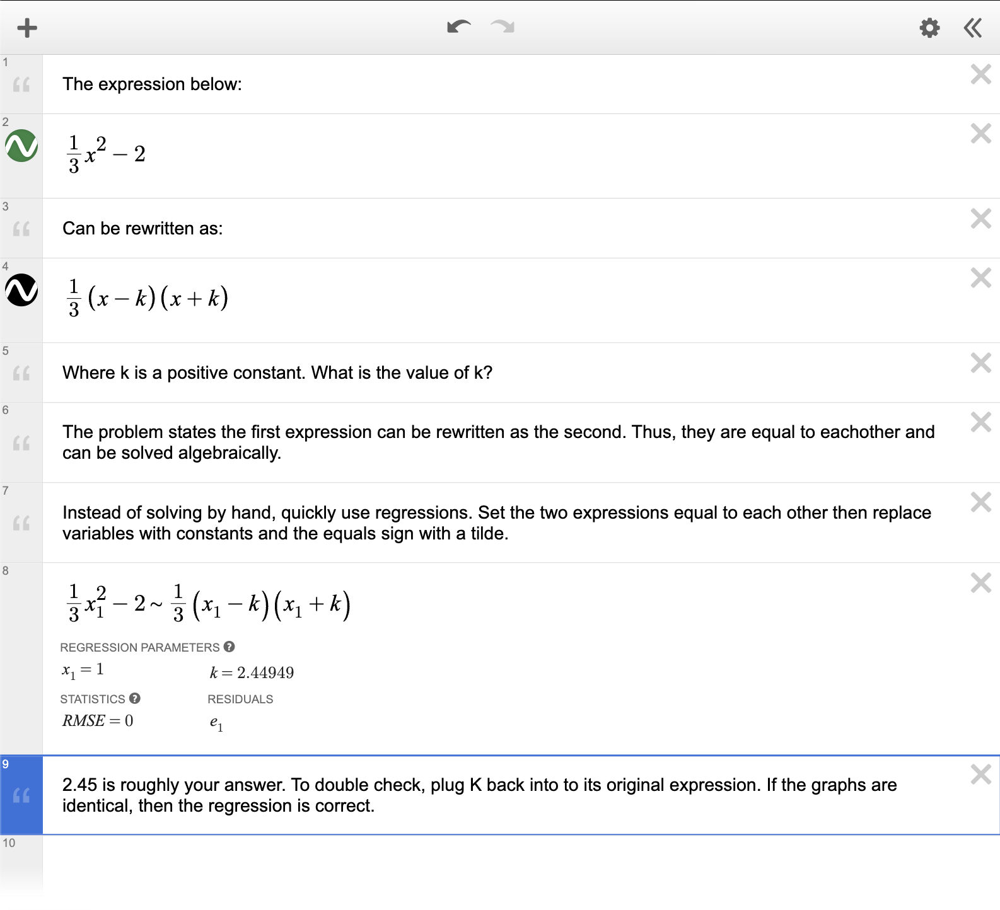

This will permanently delete . This cannot be undone.
💡
Pro Tip
📊
Welcome to SAT Math Chat
A brand-new interactive math environment designed to help you ace the SAT.
Combine AI-powered tutoring with a live Desmos graphing calculator to visualize
and solve problems in real time.
NEW
📈
Interactive Desmos Calculator
Ask Korah about any function, equation, or dataset and watch it appear on the
Desmos graph instantly. Zoom, pan, and interact with your graphs to build
deeper understanding of mathematical relationships.

🔢
Regressions & Desmos Tricks
Learn how to use linear, quadratic, exponential, and power regressions to
solve SAT problems faster. Korah will show you data tables and best-fit curves
directly on the graph — the same Desmos tricks top scorers use on test day.

🚀
Solve SAT Problems Faster
Instead of solving algebraically, plug data into Desmos and let regression find
the answer. Learn strategies like graphing both sides of an equation to find
intersections, or using sliders to match function parameters.

🛠️
Beta — Help Us Improve
SAT Math Chat is new and still in active development. Some features may not
work perfectly yet. If you encounter any bugs or have feedback, please
report them to: